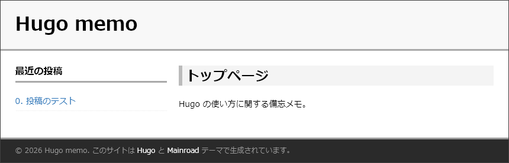
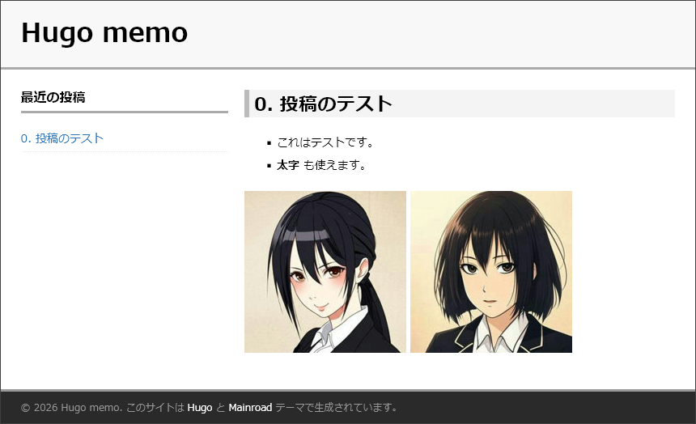

3. Hugo で作る GitHub Pages
Hugo は静的 Web サイト構築ツールである。
ここでは Windows で Hugo を利用し、GitHub Pages を作る手順を示す。
Hugo と GitHub Pages の関係
Hugo で GitHub Pages を作る方法は2つある。
- ローカルの Hugo で HTML ページを作る → GitHub に push する。
- GitHub に Markdown を push → サーバー側の Hugo がページを更新。
今回はローカルの Hugo で作った HTML ページを push する方法にした。
そのほうが手元で校正しやすいので。
ツールのインストール
- Hugo をインストールする。winget を使うと簡単である。
winget install Hugo.Hugo.Extended
プロジェクトの作成
- ひとつのサイトごとに Hugo のプロジェクトを作成する。
ここでは hugomemo というプロジェクト名にしてみた。
無事にプロジェクトが完成すると、フォルダが作られているので、そこに移動する。hugo new site hugomemo cd hugomemo - 設定ファイルの準備。
プロジェクトのルートにあるhugo.tomlという設定ファイルを編集する。# hugo.toml を修正 baseURL = "https://example.net/hugomemo/" title = "Hugo memo" ignoreFiles = ["/__"]baseURLはルート以下のフォルダ構成を示すもので、実際のドメイン名を指定する必要はない。
titleはデフォルトで全大文字表示されるが、後で CSS の設定で通常表示に戻す。
ignoreFilesで除外ファイルを指定する。ここではアンダーバー2個で始まる名前を除外。
テーマの設定
- 画面テーマをインストールする。
git initでプロジェクトをリポジトリ化し、git submoduleでテーマを入れる。
今回は Mainroad というテーマを選んだ。サイドバーが作りやすいらしい。git init git submodule add https://github.com/vimux/mainroad.git themes/mainroad - 設定ファイルでテーマを設定する。
hugo.tomlに、次のようにテーマ名と言語設定を追加。# hugo.toml に追加 theme = "mainroad" locale = "ja-jp" defaultContentLanguage = "ja" - サイドバー関連も設定する。
hugo.tomlに、次のようにサイドバー関係の設定を追加。# hugo.toml に追加 [params.sidebar] home = "left" # トップページのサイドバー位置 single = "left" # 個別記事ページのサイドバー位置 widgets = ["recent"] # サイドバーに 「最近の投稿」を表示する [params.widgets] recent_num = 20 # 「最近の投稿」に表示する件数
トップページの設定
- ファイル
layouts/index.htmlを作り、トップページのテンプレートを設定する。{{ define "main" }} <!-- _index.md の本文のみを表示 --> <div class="content"> {{ .Content }} </div> {{ end }} - ファイル
content/_index.mdを作り、トップページの内容を設定する。
ファイル名にアンダーバーを付けて_index.mdとすることに注意。# Hugo memo トップページ Hugo の使い方に関する備忘メモ。
記事の作成
- 個別記事のフォルダ構成について。
content/postsの下に記事フォルダを作り、その中のindex.mdに記事内容を書く。
この記事のみで使う画像などがあれば記事フォルダに入れる。content | +-- _index.md <-- トップページのソース | +-- posts | +-- 01-firstpost <-- 記事ごとにフォルダを作る | | | +-- index.md <-- 記事のソースを書く | | | +-- img1.png <-- この記事のみが参照する画像 | - 記事のソース (
index.md) は、フロントマター（ヘッダ部分）と記事本体で構成される。
実際のindex.mdの例を下記に示す。+++ title = "0. 投稿のテスト" date = 2026-10-01T09:00:00+09:00 draft = false +++ * これはテストです。 * **太字** も使えます。   - フロントマターについて。
YAML/TOML/JSON 形式が利用できる。本サイトでは TOML を使う。
TOML 形式は上下を+++で囲む。
フロントマターのおもな項目：
title= "記事タイトル"
description= HTML の<meta name="description" ...>になる
draft= 下書き段階なら true、公開時は false にする
tags= このページのタグ、例:tags=["tagA", "tagB"]
categories= カテゴリ、例:categories=["cateA", "cateB"]
weight= 記事の並び順（値が小さい順、マイナス値も可）
date= 公開日時（ISO 8601形式）、weight が同じ場合は date の新しい順に並ぶ - 記事本文について。
本文は Markdown で書く。Markdown にもいろいろ方言があるが、
CommonMark と GitHub Flavored Markdown に対応しているらしい。
CSS をカスタマイズし、独自のスタイルを指定する
hugo.tomlに次の設定を追加する。# hugo.toml に追加 [params] customCSS = ["css/custom.css"]- プロジェクト内の
static/css/custom.cssというファイルでスタイルを指定する。
現在の設定はこれ＞ custom.css
ローカルサーバーを起動し、ページをデバッグ表示する
- 次のコマンドを実行するとローカルサーバーが起動する。
ここで
hugo server -D-Dオプションは、下書き(draft=true)も含めて表示する。 - 起動メッセージ内にローカルサーバーの URL が示されるので、ブラウザで開く。
この場合は http://localhost:1313/hugomemo/ にアクセスすればよい。
: Web Server is available at http://localhost:1313/hugomemo/ : - ブラウザ表示の自動更新について。
ローカルサーバーを起動した状態で、ソースを書き換えるとブラウザ画面に即座に反映 する。 - ここまで設定したテーマと CSS による HTML ページのスクリーンショット。
● トップページ

● 「投稿のテスト」ページ

完成版の Web サイトデータを作る
- 次のコマンドを実行すると
publicフォルダに、Web サイトのデータが作られる。ここでhugo --cleanDestinationDir--cleanDestinationDirオプションは、デバッグ時に作られた不用なファイルをすべて消す指定である。
無料 Web ホスティングで公開してみる
- 完成した
publicフォルダは、そのまま Web サーバーにアップロードするだけで公開できる。 中身は静的 HTML なので、CGI や PHP が使えない無料 Web ホスティング も利用できる。 - ただしフォルダ名
publicは、baseURLに合わせて変更する。
今回はbaseURL="https://example.net/hugomemo/"だからhugomemoにリネームする。 - 実際に FC2無料ホームページ にアップロードしてみた。
＞ https://ydat.web.fc2.com/hugomemo/
あれもう FC2 で良いんじゃない？ とも思ったが、FC2 は3か月放置で広告が出るからね……。
GitHub Pages で公開する
- GitHub Page でも同様に、
publicをhugomemoに変えて push するだけである。
まず 前回の記事 で作成した GitHub Pages を確認しておく。
＞ https://github.com/yuimax/yuimax.github.io/ - ローカルで、Hugo の
publicから GitHub Pages のhugomemoにリンクを張る。ちなみにmklink /j C:\usr\repo\yuimax.github.io\hugomemo C:\usr\hugo\hugomemo\publicmklink /j dst srcは、srcからdstにリンクを張るコマンドである。 これで作られるリンクを「ジャンクション」と呼ぶ。フォルダ専用で、ファイルのリンクは作れない。 - このローカルリポジトリを GitHub に push する。
前回記事で作ったスクリプトdeploy.ps1を利用すると便利である。pwsh deploy.ps1 - GitHub 側のリポジトリに
hugomemoフォルダが追加された。
＞ https://github.com/yuimax/yuimax.github.io/ - GitHub Pages で Web サイトとして表示されることを確認。
＞ https://doc.yuimax.org/hugomemo/
これで完成～！